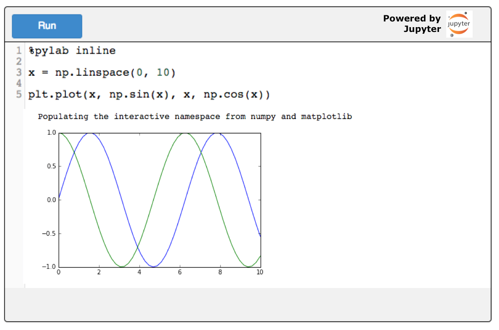
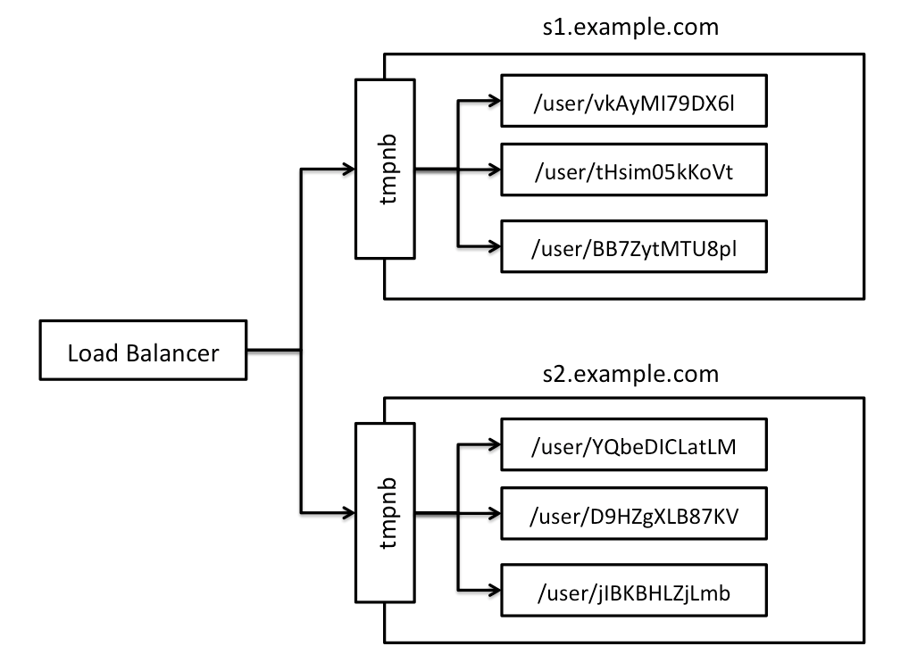
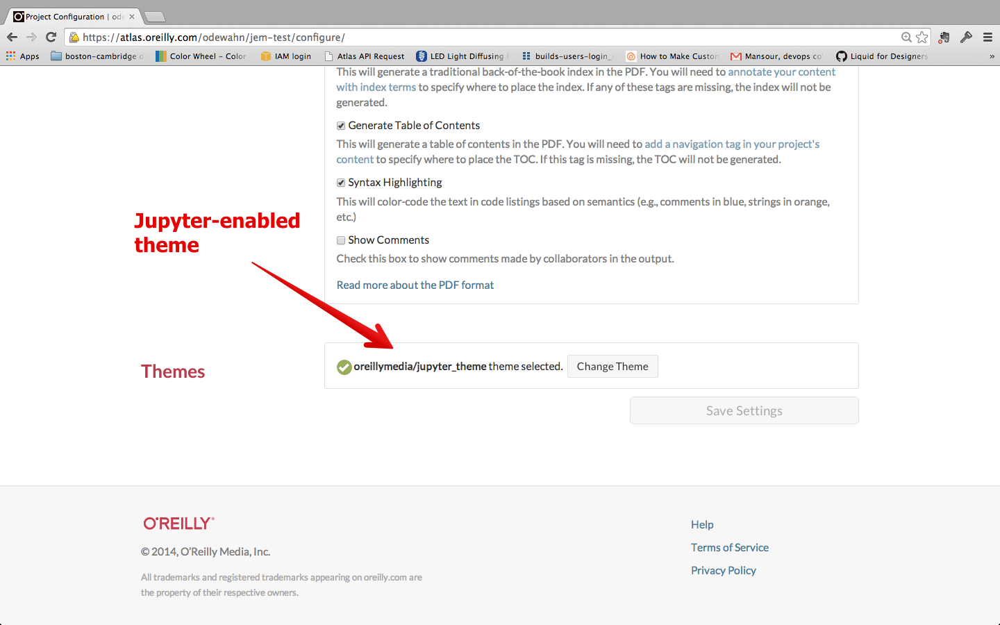

class: center, middle # Publishing Workflows <br>for Jupyter ## Andrew Odewahn @odewahn ### O'Reilly Media http://odewahn.github.io/publishing-workflows-for-jupyter --- # Write in Markdown, AsciiDoc, or HTML * Easily diff-able formats (vs. JSON, which is not) * Collaboration / GitHub friendly * Specify executable code cells using a simple, declarative format. For example: ```html <pre data-executable="ipython" data-code-language="python"> %pylab inline x = np.linspace(0, 10) plt.plot(x, np.sin(x), x, np.cos(x)) </pre> ``` --- # Generate a static site with embeddable code widget * Use tools like [Jekyll](http://jekyllrb.com/), [Pelican](http://blog.getpelican.com/), or [Atlas](https://atlas.oreilly.com/) <center>  </center> --- # Each kernel runs in a Docker container * Each user gets his or her own kernel * Kernels run in Docker container * [jupyter-kernel](https://github.com/oreillymedia/jupyter-kernel) is a reference implementation * Based on the original [singlecell](https://github.com/minrk/singlecell) server by Min RR * Need a singlecell for IPython 2 and 3, not just 1 --- # Scaling strategy for kernels * Short-term, [tmpnb](https://github.com/jupyter/tmpnb) can spin up new, transitory kernels * Long-term, we need a new system with an API that can handle scaling and security <center>  </center> --- class: center, middle <div style="font-size: 200%"> Reference implementation <br>in O'Reilly Atlas </div> --- # Edit using Visual Editor (HTML), Markdown, or AsciiDoc <center> <video autoplay="true" loop="true" muted="true" width="640"> <source src="https://s3.amazonaws.com/orm-atlas-media/atlas-jupyter/edit-with-atlas.mp4" type="video/mp4"> Your browser does not support the video tag. </video> </center> --- # Specify a Jupyter-enabled theme <center>  </center> --- # Build and publish a static site * [atlas-cli](https://github.com/oreillymedia/atlas-cli) provides a simple, command-line interface for building and publishing <center> <video autoplay="true" loop="true" muted="true" width="640"> <source src="https://s3.amazonaws.com/orm-atlas-media/atlas-jupyter/publish-atlas-cli.mp4" type="video/mp4"> Your browser does not support the video tag. </video> </center> --- # Run code on the static site via a widget <center> <video autoplay="true" loop="true" muted="true" width="640"> <source src="https://s3.amazonaws.com/orm-atlas-media/atlas-jupyter/static-site.mp4" type="video/mp4"> Your browser does not support the video tag. </video> </center> * Sample is available on [sites.oreilly.com](http://sites.oreilly.com/odewahn/jem-test/ch01.html) --- # Advantages / Disadvantages * Advantages * More design possibilities * Static assets served by CDN * Simple writing and publishing process * Disadvantages * No easy way in tmpnb to specify a different container (i.e., one with your own dependencies) * No authentication framework